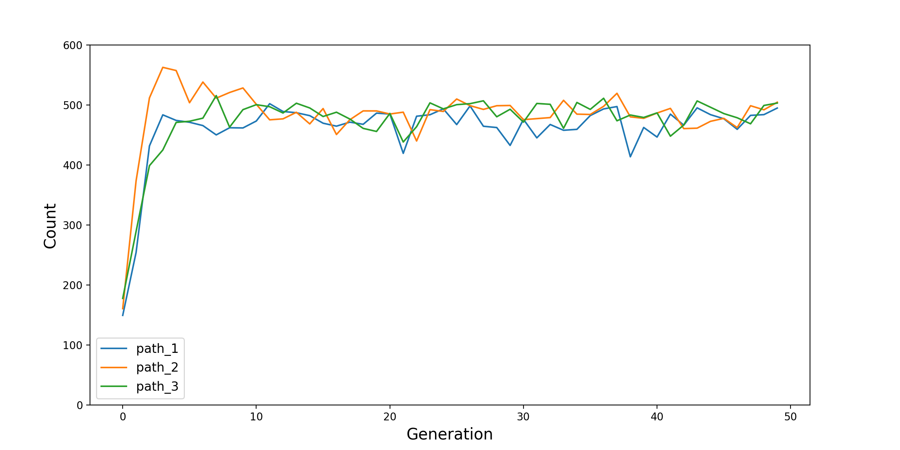
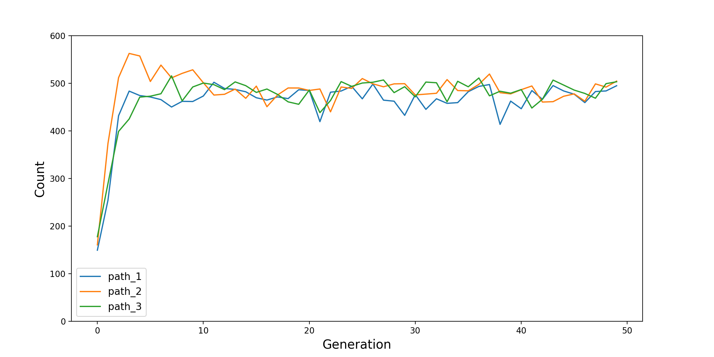

CovidContagionCalibrator
To show how the Calibrator module can be used,
we provide this CovidContagionCalibrator model,
which is almost same with the CovidContagion model.
The only difference is that, we can run it with another Modelling Manager - Calibrator.
So, if you haven’t, we will strongly suggest to read the Tutorial section first.
Project Structure
The project structure is as below.
Compared with the structure of the CovidContagion model,
two python files - calibrator.py and run_calibrator - files are added in the source and the root folders,
and two excel files - CalibratorScenarios.xlsx and CalibratorParamsScenarios.xlsx - are added in the data/input folder.
CovidContagionCalibrator
├── data
│ ├── input
│ │ ├── SimulatorScenarios.xlsx
│ │ ├── CalibratorScenarios.xlsx
│ │ ├── CalibratorParamsScenarios.xlsx
│ │ ├── ID_HealthState.xlsx
│ │ ├── ID_AgeGroup.xlsx
│ │ └── Parameter_AgeGroup_TransitionProb.xlsx
│ └── output
│ ├── CovidGridContagionCalibrator.sqlite
│ ├── PopulationInfection_S0R0.png
│ └── PopulationInfection_S1R0.png
├── source
│ ├── agent.py
│ ├── environment.py
│ ├── grid.py
│ ├── data_collector.py
│ ├── data_info.py
│ ├── data_loader.py
│ ├── scenario.py
│ ├── model.py
│ ├── calibrator.py
│ └── analyzer.py
├── config.py
├── run_simulator.py
├── run_calibrator.py
├── run_analyzer.py
└── readme.md
Calibrator
The idea of Calibrator in Melodie is to find the values of pre-defined parameters
- attributes of the scenario object -
so that the distance between model output and empirical data is minimized.
In this example, we want to find the value of scenario.infection_prob,
so that by the end of the simulation, the share of uninfected population is 50%.
For this, one file calibrator.py is added in the source folder.
1from Melodie import Calibrator
2
3from source.environment import CovidEnvironment
4
5
6class CovidCalibrator(Calibrator):
7
8 def setup(self):
9 self.add_scenario_calibrating_property("infection_prob")
10 self.add_environment_property("s0")
11
12 def distance(self, model: "CovidModel") -> float:
13 environment = model.environment
14 return (environment.s0 / environment.scenario.agent_num - 0.5) ** 2
Two functions are defined in this CovidCalibrator class.
First, in the setup function, by using the add_scenario_calibrating_property function,
we define which attribute of the scenario will be calibrated.
Melodie supports adding multiple parameters by calling the function again and passing in the name of the attribute.
However, in general, the more parameters you want to calibrate,
the longer time it could take and the lower quality of the results might be.
Additionally, as shown in Line 10, you can also add_environment_property so that they can be included in the result tables (see below).
Second, in the distance function,
you can define how the distance between the model output and the empirical data is measured.
The parameter of the distance function must be model,
so that all the input data can be accessed through model.scenario,
and all the macro- and micro-variables can be accessed through model.environment and model.agents.
But, please note that, the values are all the values by the end of the simulation.
In this example, the calibration target is “50% of the agents are not infected by the end of simulation”,
Algorithm
In the current version, Melodie applies the genetic algorithm (GA)
to search the parameter space.
Relevant parameters are defined in the CalibratorParamsScenarios.xlsx file.
Please note that,
First, in this model, we are only calibrating one parameter
infection_proband its space is \([0, 1]\), as defined in the table by attributesinfection_prob_minandinfection_prob_max.Second, the attribute
strategy_param_code_lengthdecides the length of the binary series used to code the parameter being calibrated. In the GA, it is the length of “chromosome”. The longer it is, the higher accuracy of the coding is and the longer it might take for the calibration.Third, the
generation_num,strategy_population, andmutation_probare the three common parameters in GA. The larger thegeneration_numandstrategy_populationare, the longer the calibration process will take, but also the higher quality the results will be in general.Fourth, to evaluate the uncertainty of the GA-based calibration process,
Melodiealso provides thepath_numparameter that decides how many times the calibration process is done.Finally,
Melodiealso supports batching calibration runs. Each run is a combination of one row in theCalibratorScenarios.xlsxfile and another row in theCalibratorParamsScenarios.xlsxfile. You only need to edit these two files andMelodiewill automatically iterate through all the combinations for you.
Regarding the coding of parameter, for example, if we want to code a parameter ranging in \([0, a]\) with a five-digit binary series. First, map the five-digit binary number to a decimal number. Second, divide the number by 31, which is the biggest decimal number that a five-digit binary number can represent, then we get a number x in range \([0, 1]\). Third, scale x to the range \([0, a]\) linearly. As a result, \(01001\) is translated as \(x = 9a/31\).
Results
After running the run_calibrator.py file, you will find two result table in the database.
First is the environment_calibrator_result table:
Second is the environment_calibrator_result_cov table:
As shown, environment_calibrator_result has one more index column, the id_chromosome column.
Then, environment_calibrator_result_cov calculates the mean and coefficient of variance (\(\mu / \sigma\))
of infection_prob, s0, and distance in each generation.
With the results in environment_calibrator_result_cov, two figures are plot as below.
 

For more details of the Calibrator module, please refer to the API Reference section.